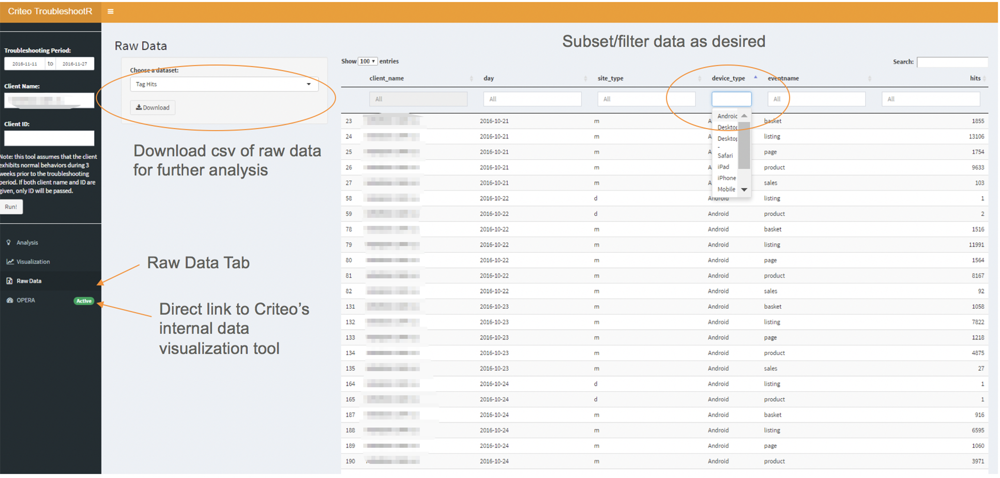

ABOUT THIS PROJECT
TroubleshootR was an end-to-end project at Criteo to develop a Shiny application for the company's Data Science & Analytics (aka AX) teams worldwide.
Problms to Solve:
- AX teams must go through different data sources one by one- this overload of information makes it difficult for them to prioritize their attention.
- The workflow of data collection, analysis, and visualization is scattered across different platforms, and hence it difficult to go back and forth.
- Because scales and patterns of KPI vary greatly by clients, analysis is often dependent on visual interpretations, and it is difficult to devise a scalable, rule-based solution.
Solution: : A Shiny application that offers a single platform to …
- Gather and preprocess client data from multiple sources at once.
- Identify potential problems through machine learning algorithm.
- Present results through interactive visualization and help users prioritize their attention.
Characteristics of Data
- Data can be seasonal or non-seasonal.
- Data range depends on the client's web traffic. Some clients’ data points can be between 0 and 50. Others can range from 5,000 to easily over 10,000.
- Data points cannot be below 0. When the data range is very small and 0 level is very normal, it is difficult to determine whether a KPI dropped to 0 because of a technical issue or not.
- KPI may drop because of clients’ products, not Criteo’s technical faults. The algorithm should not flag gradual decrease in KPI.
After much research, I decided to modify Twitter’s AnomalyDetection package (publicly available on GitHub). Thanks, Twitter!



How It Works
Some details have been omitted for confidentiality.
- User Input: client name or ID and Troubleshooting Period (period during which you think a problem has started)
- Query data from the Troubleshooting Period plus three weeks before it. These three weeks are used as Training Period to learn normal patterns of the given client. Data is collected from multiple database to go through each potential source of troubles.
- Preprocess the data and loop the detection algorithm for each subset within each dataset.
- Determine if data is seasonal by modeling exponential smoothing model on the training period and looking at the model’s seasonal component.
- If data is seasonal, examine a batch of data from Training Period + 1 week of Troubleshooting Period.
- Remove seasonality.
- Conduct Generalized ESD test for negative outliers, with 1% significance level.
- If an anomaly is detected from the last week of the data batch, record, remove, and then replace it with an expected outcome from time series modeling – this is to adapt to changes in data trend and prevent flagging gradual drops.
- Repeat step 5 through 8 on the week of Troubleshooting Period, until you go through all dates.
* If data isn’t seasonal, no need to implement Generalized ESD test incrementally- do not remove seasonality and apply the test directly to the entire Troubleshooting Period
Application Features:
- Timeline feature: Users can visualize where and when each issue has started/stopped in a neat timeline summary (credits to Dean Attali’s timevis package!)
- Plotly visualization: Interactively zoom in/out, navigate, and download visualization of each subset of data
- Click UI: quickly jump to a desired visualization by simply clicking on an item on the Timeline.
- Raw Data: If further analysis is required, users can directly go to Raw Data section to subset and download it as they wish